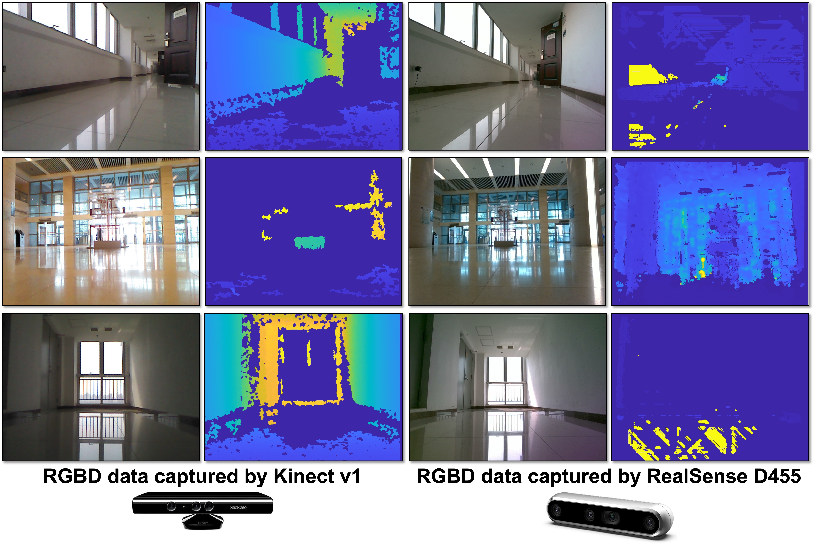
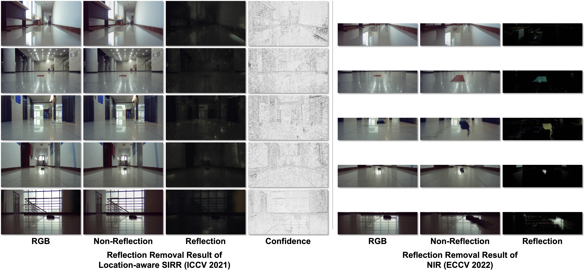
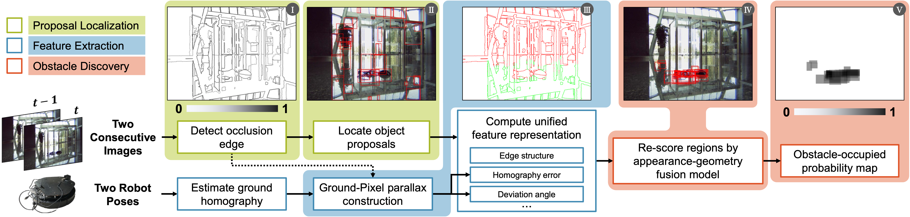
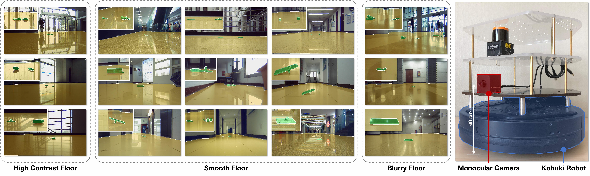
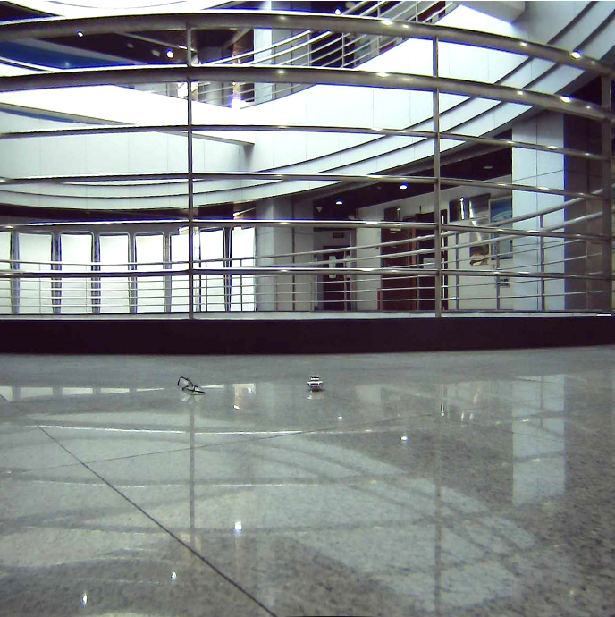
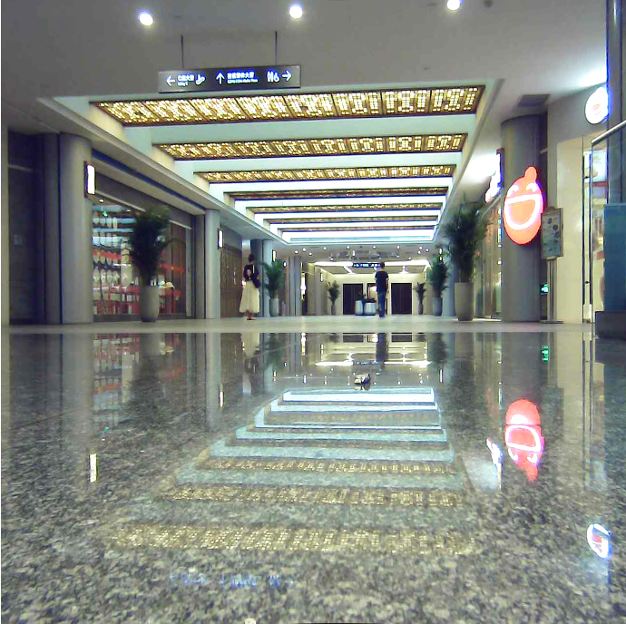
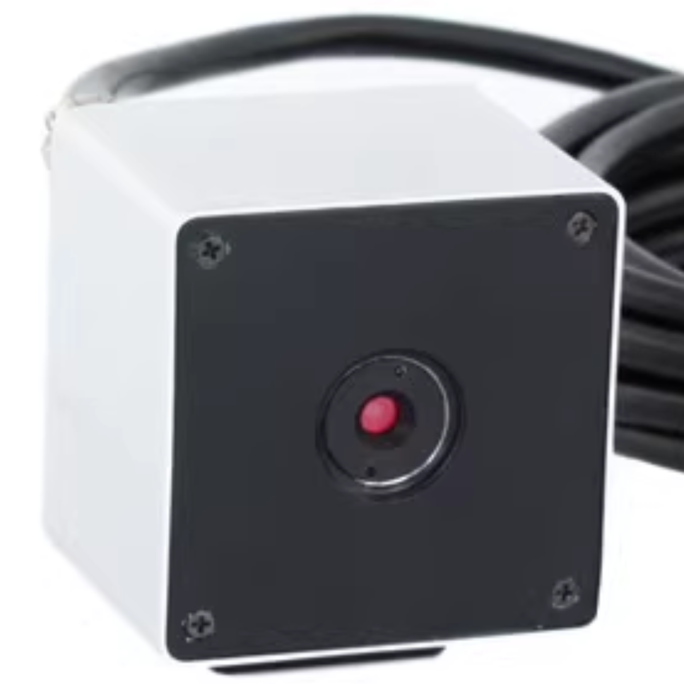

Indoor Obstacle Discovery on Reflective Ground via Monocular Camera
IJCV 2023
IndoorObstacleDiscovery-RG is an approach to discover obstacles on the reflective ground using
spatial-temporal features.
Why are obstacles on the reflective ground so hard to detect?

The unreal objects (UOs) are usually so complicated that the existing features cannot express the
difference between them and obstacles,
e.g. the edge in the figure (a) above.
Hence, the UOs and obstacles are captured indiscriminately (see the figure (b) above).
Eventually, the UOs obtain high confidence and are mis-detected as obstacles, as shown in the figure
(c)(d) above.
Is RGBD cameras effective in this scene?

We evaluate the usability of multi-modal sensors on reflective ground.
The exemplar RGBD data is visualized in the figure left.
Intuitively,
The structured light camera generates many void areas on the ground plane,
while the stereo camera matches corresponding pixels erroneously.
Clearly, both types of cameras are unsuitable for reflective ground scenes.
Can we use reflection removal methods as preprocessing?

We evaluate the usability of two reflection removal approaches in this scene, location-aware SIRR [1]
and NIR[2].
location-aware SIRR produced confidence maps that failed to highlight the reflection,
and the non-reflection images were almost identical to the original RGB images.
Despite being free from the interface of the real world,
the multi-frame-based method still fails to eliminate reflections.
The reason is that both algorithms require strong textures of main object for adequate
reconstruction,
but the ground texture is too weak to be perceived.
Method

●A pre-calibration based ground detection scheme is introduced,
which uses robot motion that is immune to reflection,
thus avoiding detection failure.
●A ground-pixel parallax is introduced to form a unified appearance-geometry feature
representation for region
proposals together with appearance feature.
●An appearance-geometry fusion model (AGFM) is proposed to locate obstacle.
It also avoids the performance degradation caused by fast-moving objects and proposals too concentrated
on parts of obstacles.
Visualization results

Obstacle on Reflective Ground (ORG) Dataset
Overview

The Obstacle on Reflective Ground (ORG) consists of 15 different indoor scenes and 42 types of obstacles.
The scenes of this dataset are mainly divided into three types:
high contrast floor,
smooth floor,
and
blurry floor.
In these scenes,
the ground of each scene has varying UOs to evaluate the robustness of the algorithm.
Even,
low illumination, different patterned floor, and small obstacle also appear in this dataset.
In terms of the obstacle,
the obstacles with different sizes and materials are contained in the dataset,
which have low height and therefore fail to be perceived by 2D LiDAR.
Details of ORG

Training Set
1,711 images / 117 videos

Test Set
1,709 images / 106 videos

Monocular Camera
2.8 mm Focal Length
1920×1080 Resolution
8 bit Pixel Size
Tree Structure of ORG
└── ORG_DATASET_ROOT
├── image
├── test
├── 19_TeachingBuilding3_F1Hall
├── 001
| 19_TeachingBuilding3_F1Hall_001_0000001_image.png
| 19_TeachingBuilding3_F1Hall_001_0000002_image.png
| ...
├── 002
├── 003
├── ...
├── 20_TeachingBuilding3_F6Corridor
├── 22_ParkBuilding_F1Hall
├── ...
├── train
├── 16_ResearchBuilding_F8
├── 17_ResearchBuilding_F6Corridor
├── ...
├── gtCoarse_Segmentation
├── test
├── 19_TeachingBuilding3_F1Hall
| 19_TeachingBuilding3_F1Hall_001_0000001_gtCoarse_labelIds.png
| 19_TeachingBuilding3_F1Hall_001_0000002_gtCoarse_labelIds.png
| ...
├── 20_TeachingBuilding3_F6Corridor
├── ...
├── train
├── odometry
├── gtCoarse
└── timestamp
image: The RGB image of ORG dataset.
gtCoarse_Segmentation: The ground truth segmentation of freespace and obstacle.
odometry: The robot's odometry in each video.
timestamp: The timestamp corresponding to robot's odometry.
gtCoarse: The ground truth segmentation of freespace and the instance annotation of obstacle (not used in our method).
BibTeX
@Article{ijcv_org,
title={Indoor Obstacle Discovery on Reflective Ground via Monocular Camera},
author={Xue, Feng and Chang, Yicong and Wang, Tianxi and Zhou, Yu and Ming, Anlong},
journal={International Journal of Computer Vision (IJCV)},
year={2023}
}
[1] Dong, Z., Xu, K., Yang, Y., Bao, H., Xu, W., Lau, R.W.: Location-aware single image reflection removal. In: IEEE/CVF International Conference on Computer Vision (ICCV) (2021)
[2] Nam, S., Brubaker, M.A., Brown, M.S.: Neural image representations for multi-image fusion and layer separation. In: S. Avidan, G. Brostow, M. Ciss ́e, G.M. Farinella, T. Hassner (eds.) Europe Conference on Computer Vision (ECCV) (2022)